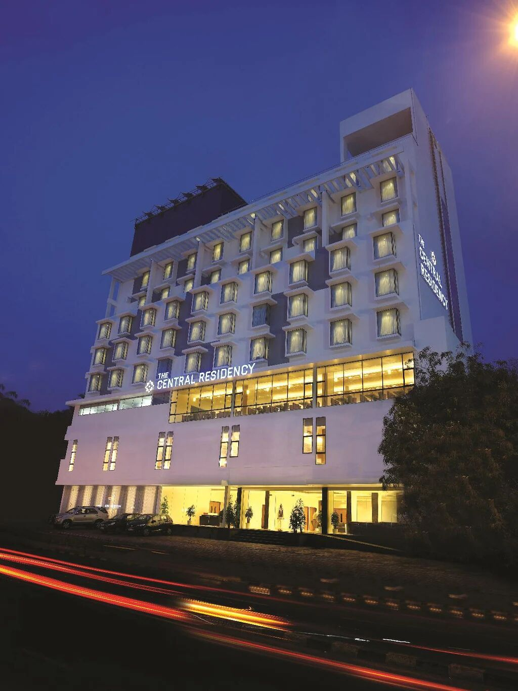
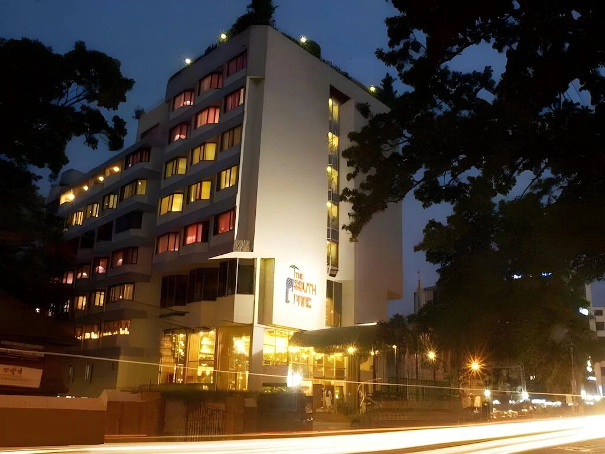

True to its name Hotel Samudra is a perfect place to enjoy a beach holiday with friends and family. The beautiful property is enclosed within lush green trees with rooms overlooking the magnificent sea. The gigantic lawns of the hotel touching the sea is a great place to take walks and relax as you watch the sunrise and sunset. The rooms are bright and airy with all the basic facilities. The property offers you modern and luxurious amenities and is one of the finest hotels close to Trivandrum.
Location: GV Raja Road, Kovalam 695527
Distance from Trivandrum: 17.7 kilometers
Starting Price: Rs.3503 per night
The Leela Ashtamudi, A Raviz Hotel
Ensconced between the pristine waters of Ashtamudi lake and the ethereal cerulean skies is a sanctuary of calm that flawlessly balances barefoot luxury with rustic charm. Elegantly poised in harmony with local history, the resort very evidently enchants and magnifies the culture and legacy of the land. Soak in stunning lake views from our tastefully appointed rooms, charming suites and villas that draw inferences from the destination and pay homage to the traditional Nalukettu style aesthetics of Kerala. Regional flavours imbue a gourmet Malabar cuisine in the hotel’s atmospheric restaurants and a selection of elegant spaces add distinction to weddings, social celebrations and business meetings. Embark on a transformative journey towards holistic well-being at the tranquil Spa where you can discover the profound virtues of Ayurveda.
Location: Thevally Bridge, Kollam - Elamballoor Rd, Kollam 691601 India
Distance from Kollam: 17.7 kilometers
Starting Price: Rs.9500 per night
Top hotels in Kasragod
Sandal Mist Resort & Spa
andalMist Resort and Spa in Kasaragod offers family rooms with air-conditioning, private bathrooms, and balconies. Each room includes a TV, electric kettle, and free toiletries.
Guests enjoy a spa and wellness center, year-round outdoor swimming pool, and lush gardens. The resort provides free WiFi throughout, an outdoor fireplace, and a 24-hour front desk.
Location:12/374 Bedaduka Panchayath, Kasaragod 671541 India
Distance from Kasragod: 20 kilometers
Starting Price: Rs.5000 per night
ShriGo Bekal Fort Resort & Spa
Beachfront and Garden: ShriGo Bekal Fort Resort & Spa in Bekal offers a beachfront setting with a lush garden. Guests can relax by the sea or enjoy the serene garden views.
Dining and Amenities: The resort features a family-friendly restaurant serving Chinese, Indian, and Asian cuisines. Free WiFi is available throughout the property. Additional facilities include a picnic area, outdoor fireplace, and free on-site private parking.
Location:R.S. NO 377/11, Beside Bekal Fort, Bekal, Pallikkare, Kasaragod, Kerala, 671318 Bekal, IndiaAfter booking, all of the property’s details, including telephone and address, are provided in your booking confirmation and your account.
Distance from kasragod: 20 kilometers
Starting Price: Rs.3000 per night
Asokam Beach Resort
Enjoy fine hospitality in Kannur at ASOKAM BEACH RESORT HOTEL on the shore of Payyambalam beach. Asokam Beach Resort provides a clean, calm and relaxing atmosphere. With the soothing sound of waves and clear air the resort is an ideal get away from hectic and stressful life. The Ayurvedic center complements the demand for treatments, relaxation, and rejuvenation. The new Kannur International Airport (Code: CNN) makes travel hassle free. Welcome aboard.
Location: Payyambalam Beach, Palliyamoola Kannur, Kerala, Kannur 670008 India
Distance from Kannur: 10 kilometers
Starting Price: Rs.5000 per night
Central Residency

The Central Residency offers vibrant entertainment, exceptional dining, and affordable luxury near major landmarks. Ideal for two travelers, it combines comfort, charm, and excellent leisure, business, conference, and banquet facilities.The Central Residency is steps from markets and cultural attractions—ideal for exploration. Unwind at the bar or enjoy convenient food delivery. Air-conditioned rooms with free Wi-Fi ensure comfort, and selected rooms offer city views. Perfect for two travelers, it blends comfort and accessibility seamlessly.
Location:Pulimoodu, Thiruvananthapuram
Distance from Trivandrum: 20 kilometers
Starting Price: Rs.2500 per night
Pavithram Residency
The Pavithram Residency (AC & Non AC Rooms) - for a budget sleep. Looking for a Cozy and Budget stay in Kollam town? Pavithram Residency, your right choice. Free breakfast Free WiFi Self Cooking Facility Special Offer for group reservations
Location:Pavithram , Kaithavaram Nagar, NellimukkuThirumullavaram, Kollam India
Distance from kollam: 20 kilometers
Starting Price: Rs.1543 per night
South Park Hotel

South Park Hotel, located in the vibrant Palayam area of Thiruvananthapuram, is a perfect choice for solo travelers seeking convenience and comfort. Surrounded by iconic landmarks, bustling markets, and rich cultural heritage, the location ensures an enriching exploration experience. Guests can unwind in the indoor pool, enjoy the lively in-house bar, and take advantage of a shuttle service for hassle-free travel. Rooms come with complimentary WiFi, air conditioning, and select options offer captivating cityscape views, making this hotel an ideal urban retreat.
Location:Palayam,Thiruvananthapuram
Distance from Trivandrum: 13 kilometers
Starting Price: Rs.2500 per night
Deira City Residency
Comfortable Accommodations: Deira City Residency in Kasaragod offers family rooms with air-conditioning, private bathrooms, and balconies. Each room includes a TV, wardrobe, and work desk, ensuring a pleasant stay.
Location:MG Road Kasaragod, 671121 Kāsaragod, IndiaAfter booking, all of the property’s details, including telephone and address, are provided in your booking confirmation and your account.
Distance from Kasragod: 20 kilometers
Starting Price: Rs.1500 per night
Pranav Beach Resort
Pranav Beach resort is all that they claim to be. It is unique among the many beach resorts line up the Palliyanmoola beach road. The energetic couple who owns and run it is there to take care of their guests and meet their needs. I thoroughly enjoyed my brief time spent their and wish them well. Environment friendly construction of the cottages using recycled doors and windows of the yore is an added attraction. Kerala food is on the menu mainly but will prepare whatever you request. Fresh fish is always there and they themselves shop for it early in the morning. All in all, a great place to spend a few days to enjoy sun, sand and local food.
Location:Beach Road, Kannur 670008 India
Distance from kollam: 8 kilometers
Starting Price: Rs.1500 per night
Chandra Inn
A journey has two sides – day and night. A night stay is the one thing that confuses every traveler with multiple choices aplenty. Quality, safety and budget are the primary fundamental things that everyone looks for. Next time when you come to Kollam, the erstwhile capital of Venad, just check in to Chandra INN, where you can have business class facility at budget rate. Chandra INN
Location:Dwadasi Nagar, Kottamukk Road Near Boy's High School, High School Junction, Kollam 691009 India
Distance from Kollam: 13 kilometers
Starting Price: Rs.3500 per night
Benale International
BENALE INTERNATIONAL HOTEL truly kept the high hospitality & best service through out our stay ... Mr.Shaji , Manager & F.O. team members, Sachin, Vaishak, Ravi extended their warm hospitality during the stay ,meeting our timely requirements.. Chef Mr.Schinto really rocked us with wide range of delicious food especially on weekend days through special menu range .. Restaurant service team members Ms. Sreelakshmi, Kavya, Hima are praiseworthy on their speedy service with pleasing smile recommending right choice of food..
Parking area for the guest cab should be improved with better ambience... we will definitely revisit BINALE INTERNATIONAL